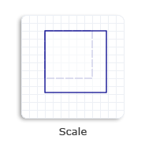

This topic describes how to scale an object by using the Matrix3x2F class. To scale an object means to make the object larger or smaller. You can call one of the following two methods to scale an object.
The first method stores scalex and scaley as an ordered pair of floating-point values in the D2D1_SIZE_F structure. The second method defines scalex and scaley as individual parameters.
Regardless of which method that you use, you must specify both scalex and scaley factors. The scalex value is the scale factor in the x direction. For example, a scalex value of 1.5 stretches the object to 150 percent along the x-axis. Similarly, the scaley value is the scale factor in the y direction. For example, a scaley value of 0.5 shrinks the height of the object by 50 percent along the y-axis.
To specify a point as the center of the scaling operation, use the centerpoint parameter. By default, an object is centered about its origin (0,0).
The following example code creates a scale transformation to increase the size of a square to 130% of its original size. The centerpoint is set to be the upper-left corner of the original square.
// Create a rectangle.
D2D1_RECT_F rectangle = D2D1::Rect(438.0f, 80.5f, 498.0f, 140.5f);
// Draw the outline of the rectangle.
m_pRenderTarget->DrawRectangle(
rectangle,
m_pOriginalShapeBrush,
1.0f,
m_pStrokeStyleDash
);
// Apply the scale transform to the render target.
m_pRenderTarget->SetTransform(
D2D1::Matrix3x2F::Scale(
D2D1::Size(1.3f, 1.3f),
D2D1::Point2F(438.0f, 80.5f))
);
// Paint the rectangle's interior.
m_pRenderTarget->FillRectangle(rectangle, m_pFillBrush);
// Draw the outline of the rectangle.
m_pRenderTarget->DrawRectangle(rectangle, m_pTransformedShapeBrush);
The following illustration shows the effect of applying the scale transformation to the square. The original square is a dotted outline and the scaled square is a solid outline.

Â
Â